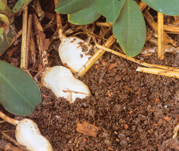
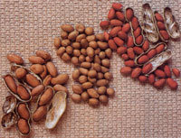
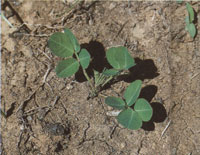
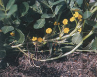
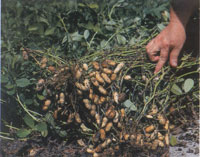

Considering all they have to offer, it's hard to imagine how peanuts became associated with smallness, as in "peanut-brain" or "buying something for peanuts." Nutritionally speaking, peanuts are packed with protein, fiber and vitamin E, plus the kind of fat that lowers cholesterol rather than raising it. In the garden, peanuts are solar-powered wonders that fix their own nitrogen, and you can feed the plant tops to animals or use them as mulch, after you harvest the nuts. Peanuts themselves can show up in any course on the table, from salad to dessert. No wonder we eat so many of them. The average American consumes six pounds of peanut products per year, but I think I eat three or four times that much. I really like peanuts!
Known as ground nuts, monkey nuts and goobers, peanuts are native to South America, where they have been cultivated for at least 3,500 years. Brazil is home to 63 species, many of which are perennial, and Ecuador also hosts numerous ancestral strains. In the wild, peanuts often are pioneer plants, using their nitrogen-fixing ability to spread into disturbed places where they effortlessly improve the soil. And, although peanuts are generally regarded as a warm-climate crop, wild strains of Arachis hirsuta ("hairy peanut") have been found in the Andes Mountains at the chillingly high altitude of 8,790 feet.
Here in North America the annual peanut species grown for its nuts, Arachis hypogaea, needs plenty of warm weather, but you don't have to live in Georgia to grow great goobers. In southern Ontario, Ernie and Nancy Racz have been growing peanuts as a cash crop since 1982. Although Ontario is a long way from the Poplar Grove Plantation near Wilmington, North Carolina (where the first peanuts are thought to have been grown on this continent) both locations work well for peanuts. The trick is choosing the best type for your climate.
There are four major types of peanuts: Valencia, Spanish, runners and Virginia.
Valencias are the leading home garden peanut. They're grown commercially in New Mexico and they're the peanuts grown on the Racz farm in Ontario. The popular `Tennessee Red' and `Georgia Red' varieties are Valencias, and the most commonly grown commercial variety, `Valencia A,' is a descendant of `Tennessee Red.' As the fastest maturing peanut plants, Valencias are usually ready to dig 95 to 100 days after planting. Valencias have three to six small, redskinned seeds packed into each pod. Famous for their sweet flavor and well filled pods, I think these are the best peanuts to eat raw. When roasted, Valencias come very close to the delicate crispness of Spanish peanuts.
Spanish peanuts produce small, rounded nuts with fine flavor and a crisp texture that makes them ideal for oil-roasted cocktail nuts or for use in candy making. Maturing about 110 days after planting. Spanish peanuts have an erect growth habit, and they tolerate drought well enough to he groan commercially in Texas. Oklahoma and New Mexico.
Runners are the peanut butter makers of the southeastern peanut belt, which stretches across northern Florida, southern Georgia and southern Alabama. Maturing in 130 to 150 days, disease-resistant varieties such as 'Southern Runner' produce medium sized kernels, two to a pod, beneath plants that have a spreading growth habit. Runners need plenty of rain and warm weather, but they are usually very- tough, vigorous plants.
The seeds of Virginia peanuts are so big that they're called the Cadillac of peanuts. Grown mostly in Virginia and North Carolina, Virginia peanut plants look similar to runners. Like runners, Virginia peanuts need 130 to 150 days of warm weather, and there are usually two large seeds within each pod. Most of the commercially grown varieties were developed in North Carolina, with romantic names such as 'NC6' and 'NC11.' These are the big peanuts found in snack foods and trail mixes; they also are often sold as freshly roasted peanuts.
The perfect soil for peanuts is sandy, loose and well-drained, with at least 18 inches of topsoil over subsoil that's neither rock nor hardpan. Peanuts will grow in clay loam, but small clay particles stick to the textured surfaces of mature peanut pods, leaving mottles that mar the beauty of the shells. The peanuts inside are just fine: You might not be successful selling peanuts grown in clay, but you shouldn't have any problem eating them.
Think carefully about where you plant peanuts in your garden, because they are sensitive to rotations. Plant peanuts after corn, wheat or another small grain, but never after potatoes or beans, which host several diseases that can infect peanuts. In an intensely managed, year-round vegetable garden, plant peanuts after winter greens such as turnips or kale.
Because peanuts fix most of their own nitrogen they don't need much fertilizer, but they do need abundant calcium along with boron, zinc and other minor nutrients. These are easily supplied by working a couple of inches of compost or rotted manure into the soil prior to planting. For added calcium, amend the soil with gypsum, a rock powder, at the rate of 15 pounds per 1,000 square feet. In extremely acidic soils some lime may be needed as well. Peanuts prefer a slightly acidic soil, between 5.8 pH and 6.5 pH.
As with peas and other nitrogen-fixing legumes, peanuts often get off to a stronger start if you give them a tease of nitrogen soon after planting. However, because peanuts are susceptible to fertilizer burn, use nothing stronger than diluted fish emulsion. A single drench, applied soon after the seedlings crack through the soil's surface, is usually adequate.
Peanut plants grow 12 to 18 inches tall and up to 3 feet across, so its best to space row centers at least 36 inches apart. Always wait until after the soil has warmed to plant peanut seeds. Three weeks after the last frost and after soil temperature rises above 60 degrees is good peanut planting time. Plant seeds just shy of 2 inches deep, 4 to 6 inches apart. Soaking seeds overnight in water just before planting promotes fast, uniform germination.
Peanut seedlings will emerge within a week after planting, then they will grow slowly for about a month. Be patient, because secret wonders are taking place underground. For example, when you see four leaves above the soil line, there is probably already a 12-inch-long taproot beneath the plant, accompanied by lateral roots .stretching out in all directions.
Its fine to mulch between peanut rows and to hoe weeds, but hand-pull weeds that appear close to the plants crowns. Always hoe level rather than hilling soil up around the plants, which peanuts don't like at all. Once pegging has begun (see "Pegging Peanuts" on Page 77), stop weeding if it moans disturbing the soil under the plants' branches.
Peanuts have no problem with heat, though even well-watered plants will wilt in the middle of a hot day. They do need regular watering, which is best supplied by deeply soaking the plants once or twice a week. The critical period for watering is 50 to 100 days after planting, when the pods are growing near the soil's surface. As the plants near maturity, let the soil dry out. Very wet soil encourages mature peanuts to sprout in the "round.
The days to maturity listed on the seed packet will give you a general idea of when your peanuts are ready to dig. but growing conditions can affect maturity time. If your plants begin to yellow, go ahead and dig them without delay. But most of the time, peanut plants are quite green when the pods are mature, so you'll need to dig up a sample plant or two to see if the nuts are ripe. Use a digging fork to loosen the soil around a plant lift it up (use two hands), shake well and then turn it over. Gather up the pods and shell the nuts. If 70 percent of the nuts have dark pink to red seed coats, and the insides of the shells also have turned a dark color, the entire planting should be harvested. Dig the plants, shake off the soil and lay the plants in the sun to dry. If a lot of dirt sticks to the pods, shake them a second time after they have been out of the ground for a day. You can hose off the nuts, too, but only if you have ovenlike weather to quickly dry them. Let the harvested plants dry in the sun for a week, and then set up a comfortable place in the shade to pick the nuts from the roots.
Even if you harvest your peanuts on precisely the right day, 20 percent to 25 percent of the nuts will be immature, or green. The shells of green nuts are soft, and the skins on the seeds are not fully colored. With a little practice, you will be able to tell the difference between mature and green nuts without removing them from the shells. Set aside the green nuts and use them to make boiled peanuts (see Page 78 for instructions). Spread out the mature nuts in a cool, dry place and allow them to dry for another two weeks before storing them in mesh bags. Kept cool and dry, cured peanuts will keep for several months, or you can shell them and store the raw kernels in your freezer for more than a year.
The roasting process changes peanut flavor, which is created by several hundred flavor compounds. I like the sweet chewiness of raw peanuts, but roasted ones are more versatile in recipes. You'll be ready for anything if you keep both forms on hand.
Whether unshelled or shelled, peanuts scorch easily, so it's important to watch both the temperature and cooking time very closely. Preheat your oven to 350 degrees, and arrange peanuts in a single layer in a clean baking pan. I prefer lightly roasted peanuts, so I consider shelled Valencias to be done after 14 minutes. Larger Virginias take about three minutes longer. Roasted in the shell (which produces more of that delicious aroma), Valencias take about 17 minutes, and Virginias are ready in 22 minutes. Roasting makes peanut shells more brittle, which makes shelling them messier, but this is no big deal if you shell them outside.
Peanuts are a rare example of the reproductive strategy called geocarpy, in which the seeds form and ripen in the ground beneath the plants. Beginning about 40 days after germination, peanuts produce yellow sweet-pea like flowers. When the flowers fade, the stems on the fertilized ovaries lengthen until the painted "peg" punts itself in the soil, 1 to 2 inches deep. Once it penetrates the soil, the peg turns horizontal and continues to grow and mature into a peanut. Flowering is continuous over several weeks. The first pegs that enter the soil, which grow quite close to the taproot, mature at a slower rate than those that appear later, so they all even out in the end. Depending on variety and growing conditions, each peanut plant should produce between 25 and 50 pods.
Bypass roadside stands that sell boiled peanuts in June, and ignore the directions on bags of raw peanuts that tell you to boil them in salted water for eight hours. Real boiled peanuts are made with fresh, green nuts, so they're a seasonal treat of autumn. To make this delicacy, wash immature pods very well, and place them in a pot of very salty water. Bring to a boil and simmer for 60 to 90 minutes. Drain, cool and enjoy. Leftovers may be stored in the refrigerator or freezer.
Companies that sell peanut seeds are listed below. Or you can plant raw peanuts purchased at the store. I know this will work, because I collected samples from supermarkets and health food stores and ran germination tests on them. I tested raw, packaged Spanish, Virginia and Valencia peanuts, both shelled and unshelled, and got close to 100 percent germination on all of them by sealing them in a sandwich bag with a wet paper towel inside. Then I ate the sprouted peanuts, which are nutty and somewhat sweet. In fact, I highly recommend 3-day-old peanut sprouts as an addition to salads or Asian-style noodles.
Park Seed Co.
Free catalog
(800) 845-3369
Southern. Exposure Seed Exchange
Catalog $2 U.S., $3 Canada
(540) 894-9480
Ontario Seed Co.
Free catalog
(519) 886-0557
|
 RICK WETHERBEE The loosened soil under this peanut plant reveals the pods that form underground. |
 BARBARA PLEASANT The leading cultivated types of peanut (left to right) include Virginia, Spanish and Valencia. The nuts of runners (not pictured) are very similar to Virginia types. |
BARBARA PLEASANT Author Barbara Pleasant is a nut nut. |
|
 WILLIAM H. ALLEN, JR Peanut seedlings develop a deep taproot. |
 WILLIAM D. ADAMS Then the flowers are pollinated, triggering the pegs to grow down into the soil and produce the peanuts. |
 WILLIAM D. ADAMS A single peanut plant can produce up to 50 new peanuts. |